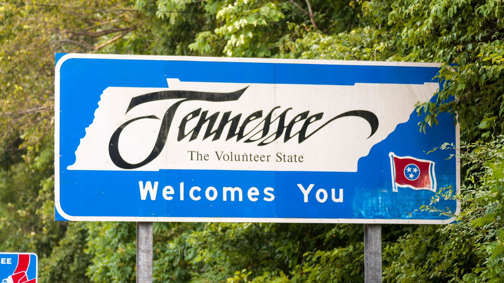
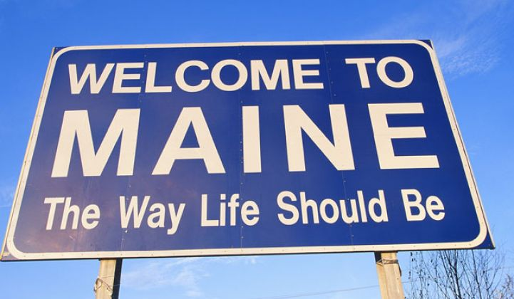

Sadie was born in Tennessee in January of 2016. At 8 months old, she and her sister were living in a high kill shelter. 2 months later, she and her sister were fostered by a family that takes care of dogs so they will not be put down. By the time we had reached out to the foster family, they had 16 dogs living with them.
The foster family was more than happy to let us adopt Sadie. Her sister was also adopted by another family in Massachusetts. She made her way up in early December of 2016.
She has been living in Boston up until September of 2018, where she moved up to Orono, Maine and taking classes at the University of Maine
